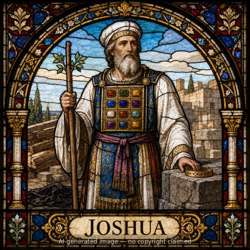

Joshua (M)
First named in Exodus 17:9-14
Joshua son of Nun, from the tribe of Ephraim, first appears leading Israel's fighters against Amalek while Moses held up his hands on a hill (Exodus 17:9-13), and became Moses' personal aide, present on Sinai and at the tent of meeting (24:13; 33:11). Sent as one of twelve spies into Canaan, only Joshua and Caleb urged Israel to trust God and take the land; the other ten spies' fear-driven report provoked the rebellion that cost that generation forty years in the wilderness (Numbers 13-14). God commissioned Joshua as Moses' successor, commanding him repeatedly to "be strong and courageous" (Deuteronomy 31:7-8, 23; Joshua 1:6-9). He led Israel across the Jordan on dry ground, oversaw the fall of Jericho's walls after seven days of obedient marching, and pressed the conquest through Ai, the Gibeonite deception, and the southern and northern campaigns, then divided the land by tribe (Joshua 3-21) -- though he, like Moses, never saw every inhabitant driven out, leaving unfinished business for the judges' era. Near death, he gathered Israel at Shechem and charged them to put away foreign gods, declaring, "as for me and my house, we will serve the LORD" (24:15). His obedience, courage, and singular focus on God's promise make him one of Scripture's clearest models of faithful leadership under a mandate he did not choose for himself but received through Moses.
Thought for Today
God told Joshua, 'be strong and courageous.' When we're afraid to obey, may we remember that God goes before us too.
References: Exodus 17:9-14; Exodus 24:13; Exodus 32:17; Exodus 33:11; Numbers 11:28; Numbers 13:8-16; Numbers 14:6-38; Numbers 26:65; Numbers 27:18-22; Numbers 32:12-28; Numbers 34:17; Deuteronomy 1:38; Deuteronomy 3:21-28; Deuteronomy 31:3-23; Deuteronomy 32:44; Deuteronomy 34:9; Joshua 1:1-16; Joshua 2:1-24; Joshua 3:1-10; Joshua 4:1-20; Joshua 5:2-15; Joshua 6:2-27; Joshua 7:2-25; Joshua 8:1-35; Joshua 9:2-27; Joshua 10:1-43; Joshua 11:6-23; Joshua 12:7; Joshua 13:1; Joshua 14:1-13; Joshua 15:13; Joshua 17:4-17; Joshua 18:3-10; Joshua 19:49-51; Joshua 20:1; Joshua 21:1; Joshua 22:1-7; Joshua 23:1-2; Joshua 24:1-31; Judges 1:1; Judges 2:6-23; 1 Kings 16:34; 1 Chronicles 7:28; Nehemiah 8:17; Acts 7:45; Hebrews 4:8
Genealogy
Connections
Other people named Joshua
